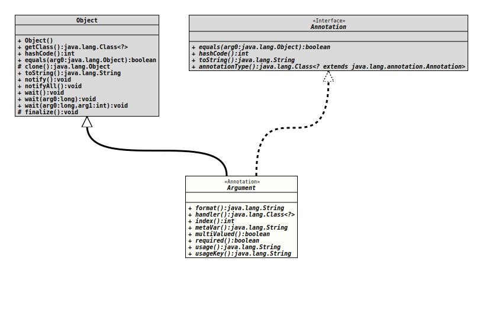

Annotation Interface Argument
This annotation is used in the context of a configuration bean specification to mark a property that receives the value of a command line argument. It will be placed to the getter for the property.
A command line argument will be identified by its relative position on the parameter list, after any command line options. Therefore it has an index, where an option has a name.
- Author:
- Thomas Thrien (thomas.thrien@tquadrat.org)
- Thanks to:
- Kohsuke Kawaguchi (kk@kohsuke.org), Mark Sinke
- Version:
- $Id: Argument.java 1061 2023-09-25 16:32:43Z tquadrat $
- Since:
- 0.0.1
- UML Diagram
-

UML Diagram for "org.tquadrat.foundation.config.Argument"
{kind=link}
-
Required Element Summary
Required ElementsModifier and TypeRequired ElementDescriptionintA command line argument is identified by its relative position on the command line, instead by a name. -
Optional Element Summary
Optional ElementsModifier and TypeOptional ElementDescriptionSome value handlers (like theDateValueHandler) use this field for additional validation information, like a format String.Class<?> Specifies the command line value handler that translates the command line argument value to the type of the target property and places that value to the property.A name for the argument that is used in messages.booleanA flag that indicates whether the argument is multivalued, for mappings to aCollection.booleanA flag that specifies whether this argument is mandatory.A help text that will be displayed in the usage output ifConfigBeanSpec.getResourceBundle()returns noResourceBundleinstance or the call togetString()with the value ofusageKey()on the retrieved resources throws aMissingResourceException.The resource bundle key for a help text that will be displayed in the usage output.
-
Element Details
-
format
Some value handlers (like the
DateValueHandler) use this field for additional validation information, like a format String. It is ignored by most others.Refer to the documentation of those value handlers for the exact contents specification.
- Returns:
- The extended format specification according to the option handler, or the empty String.
- Default:
""
-
handler
Specifies the command line value handler that translates the command line argument value to the type of the target property and places that value to the property.
The default value
CmdLineValueHandler.classindicates that the effectiveCmdLineValueHandlerimplementation will be inferred from the type of the annotated property.If it is set to a class that extends
CmdLineValueHandler, an instance of that class will be created (therefore it has to provide a constructor with the signature<<i>Constructor</i>>(CLIDefinition, BiConsumer)) that is used as the handler. This is convenient for defining a non-standard option parsing semantics.Example
// this is a normal "-r" option @Option() boolean getFlag(); // This causes that MyHandler is used instead of the default handler // provided for boolean @Option( handler = MyHandler.class ) boolean getYesNo();- Returns:
- The
CmdLineValueHandlerimplementation.
- Default:
org.tquadrat.foundation.config.cli.CmdLineValueHandler.class
-
index
int indexA command line argument is identified by its relative position on the command line, instead by a name. The first position has the index 0, the second is 1 and so on.- Returns:
- The index for the argument.
-
metaVar
A name for the argument that is used in messages.
If left unspecified, that name is inferred from the name of the configuration property itself.
- Returns:
- A meta variable string.
- Default:
""
-
multiValued
boolean multiValuedA flag that indicates whether the argument is multivalued, for mappings to aCollection. As this will consume all remaining arguments from the command line, the annotated property has to be the last argument.- Returns:
trueif the argument is multivalued,falseotherwise.
- Default:
false
-
required
boolean requiredA flag that specifies whether this argument is mandatory. This implies that all previous arguments (those with lower indexes) are mandatory as well.- Returns:
trueif the argument is mandatory,falseotherwise.
- Default:
false
-
usage
A help text that will be displayed in the usage output if
ConfigBeanSpec.getResourceBundle()returns noResourceBundleinstance or the call togetString()with the value ofusageKey()on the retrieved resources throws aMissingResourceException.The default is the empty String.
- Returns:
- The usage help text.
- Default:
""
-
usageKey
The resource bundle key for a help text that will be displayed in the usage output.
If not specified, the value will be derived from the name of the property like this:
USAGE_<PropertyName>The text will be retrieved from the
ResourceBundlethat is returned fromConfigBeanSpec.getResourceBundle(); if that isnullthe value ofusage()is taken instead.This allows to localise the usage output.
- Returns:
- The resource bundle key for the usage text.
- See Also:
- Default:
""
-